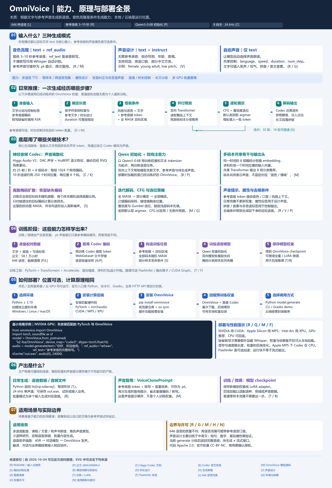

多语言与跨语言
目标文字可以属于不同语言；参考声音也可来自另一种语言。语言数量表示覆盖，实际发音和稳定性需按语言验收。
语言列表 ↗把文字合成为语音，
克隆参考声音，或用属性设计声音。
它的本质是条件语音合成模型（TTS）。训练让模型学会“文字与声音的关系”；使用时，预训练权重根据文字和声音条件，生成新的声音编码，再解码成可播放音频。
多语言是覆盖价值；参考声音条件 + 非自回归语音生成是核心能力。模型可以运行在个人电脑、企业服务器或云 GPU 上，部署位置与生成原理是两件事。
目标文字决定内容；参考声音或属性决定声音条件。
输入短参考音频，模型利用其中的声音特征合成另一段文字。正常使用不需要为这个人重新训练模型。
audio = model.generate(
text="你好，欢迎来到今天的课程。",
ref_audio="ref.wav",
ref_text="这是参考录音里说的内容。",
)可带语言、发音及非语言声音标记
声音的压缩编码，尚不能直接播放
API：list[np.ndarray]；文件：WAV 等
理解“把声音参数化”，需要分清这三个层次。
音频编码器把波形压缩为离散编号。它们表示这段声音的信息，类似一种模型可处理的“声音编码”。
训练调整神经网络的大量数值，使模型学会文字、声音条件与声学编码之间的统计关系。
使用时把参考音频编码，并与转写文字一起作为上下文，引导目标声音。可以缓存提示，重复使用。
先把声音编码为模型可处理的数据；训练让模型学会条件生成；克隆时用参考声音引导已有模型，生成新文稿的声音。
从可读文字，到离散编码，再到可以听到的波形。
输入目标文字。克隆模式准备参考音频和转写；设计模式准备声音属性；自动模式只需目标文字。
文本转换为 token。参考音频经 Higgs Audio Tokenizer 转成 8 组码本的声学 token，组成模型上下文。
根据文字与参考转写等规则估计帧数，或指定 duration。目标区域初始全部为 MASK，表示未知编码。
每轮利用文字、声音条件和已填的编码，并行预测空位；按置信度和码本优先级填入一部分，再进入下一轮。
补全后的多组离散编码经音频解码器还原成波形；需要时进行音量处理、尾部修整及长文分段结果的拼接与衔接。
返回 24 kHz 单声道音频数组列表。调用方可以保存 WAV、接入播放器，或加入自己的应用工作流。
依据：生成、提示与音频解码实现 · 规则时长估计
双向描述的是注意力的可见范围：当前预测可以参考前面，也可以参考后面。
点击一个 MASK 格子，再切换注意力范围。
注意力机制让模型判断上下文中哪些信息有助于当前预测。多层网络融合这些信息，再预测每个时间位置、每组码本可能的编码编号。
已知整段文字，而且部分较后位置的编码也可能已填好。模型能结合两边的信息补空位，支持整段并行预测和反复完善上下文。
后面还没生成的真实声音仍然未知。模型看到的是当前位置上的编码或 MASK，不会提前得到正确答案。“双向”也不等于两个模型同时说话。
依据：论文模型结构与双向注意力 · 音频嵌入与输出头实现
从全部未知开始，每轮预测许多位置，再填入一批编码。
每列对应同一时刻的 8 个声音编码，不是 8 个说话人。
这里处理离散编号，用 MASK 表示破坏后的未知状态；模型学习恢复编码。推理逐轮减少 MASK，属于扩散语言模型风格的离散生成。
一次前向计算会预测多个空位，而非严格从左到右逐个生成。总速度仍受步数、序列长度、硬件和批量影响；并行不代表瞬间完成。
音频表征、生成网络和推理调度共同构成核心。
例如 10 秒音频约有 250 个时间位置 × 8 组 = 2,000 个编码。每个位置的 8 组嵌入相加成一个输入向量；模型对 8 组分别预测。每组另有一个 MASK 编号。
依据：Higgs Audio V2 文档 · 编码器技术说明 · 多码本嵌入与预测
训练过程中也会丢弃部分条件，使模型具备无条件预测能力，供推理时 CFG 使用。
训练样本与损失掩码 ↗零样本克隆通常直接进行这一阶段。想调整模型能力时，才另行考虑全量微调或 LoRA。
训练与微调指南 ↗Classifier-Free Guidance 对比有条件与去掉文字、风格和参考声音条件的预测，放大条件对结果的影响。它属于推理阶段的概率调节，需要训练时的条件丢弃支持。
条件与无条件预测实现 ↗ · 条件丢弃配置 ↗PyTorch 与 Transformers 执行模型；训练可用 Accelerate、混合精度与序列打包。可选 FlashInfer 合并条件分支计算，使用融合算子与 CUDA Graphs。加速收益依赖 GPU、批量与软件组合，不能把论文速度直接当成本机速度。
依赖配置 ↗ · 训练实现 ↗ · FlashInfer 路径 ↗“本地模型”说明权重在计算环境中运行；这个环境也可以位于云端。
下载权重，在自己的设备推理。适合验证、研究、少量生成和本地工具。
准备 Python、PyTorch、模型与硬件支持。在统一机器加载模型，供内部批量任务或应用调用。可管理模型缓存和任务队列。
HTTP 接口、鉴权和并发管理需要自行开发。把同样的权重与依赖放在云主机推理，再通过自己封装的服务远程使用。
云是部署位置，底层仍运行 OmniVoice 权重。在新的虚拟环境中操作。PyTorch 的具体安装命令请按 官方安装选择器匹配设备与 CUDA。
pip install omnivoice
omnivoice-demo --ip 127.0.0.1 --port 8001也可使用 omnivoice-infer 单项生成，或 omnivoice-infer-batch 批量 / 多 GPU 推理。Gradio 是官方示例入口；生产服务需另外封装。
首次使用模型 ID 会下载预训练资源。之后可使用缓存，或把模型 ID 替换为准备好的本地模型目录。
from omnivoice import OmniVoice
import soundfile as sf
import torch
model = OmniVoice.from_pretrained(
"k2-fsa/OmniVoice", # 也可传入本地模型目录
device_map="cuda:0",
dtype=torch.float16,
)
audio = model.generate(
text="你好，欢迎来到今天的课程。",
ref_audio="ref.wav",
ref_text="这是参考录音里说的内容。",
num_step=32,
)
sf.write("out.wav", audio[0], 24000)Apple Silicon 将设备设为 mps，Intel Arc 设为 xpu，并匹配相应环境。缺省 ref_text 会加载额外的 Whisper ASR；手工提供转写可以跳过它。MPS 路径中的音频编解码器会转到 CPU 执行。
检查文稿读音、内容完整性、音色、停顿与输出时长，再测单条耗时、批量吞吐和硬件占用。接入应用时保存 / 播放数组，按需求增加 API、排队、错误处理和存储。
在提前准备全部模型资源和依赖后可以离线运行，包括 OmniVoice、音频编解码器，以及需要自动转写时的 Whisper。普通推理不必调用收费云模型 API。
依据：官方安装说明 · API 与命令行入口 · 资源加载与设备处理
将“文字 → 声音”作为工作流中的一环。以下场景是基于公开能力的采用方向。
文稿、课程、讲解或资讯转语音，统一声音并批量制作。翻译与编辑文稿属于上游步骤。
把语言模型生成的回答转成声音。识别用户语音、对话逻辑和播放中断需要其他组件。
用声音属性探索角色风格，或用已授权的参考声音试制旁白。需实际试听属性一致性。
学习离散声学编码、掩码训练和条件生成，评估特定语言 / 文本，再按需要调整模型。
| 容易产生的理解 | 更准确的边界 |
|---|---|
| 音色克隆 = 每个人训练一套参数 | 通常用参考提示引导已有模型，不重新训练该人的权重。 |
| 646 种语言 = 每种质量都一样 | 覆盖广，语言资源与表现不均；声音设计尤其要单独验收。 |
| 跨语言克隆 = 自动翻译配音 | 需要提供目标语言文稿；翻译、字幕对齐及剪辑需额外接入。 |
| 本地模型 = 只能在本机调用 | 权重可在服务器或云 GPU 运行，再由应用通过接口调用。 |
| Qwen 初始化 = 可接任意聊天模型 | 实际使用经过语音训练的 OmniVoice，接口不是通用 LLM 适配器。 |
| 并行生成 / 长文分段 = 实时流式播放 | 当前 generate() 生成后返回完整结果；实时流式交付需另外实现并验证。 |
保留此前整理的总览图，涵盖能力、输入输出、技术、训练与部署。

研究依据来自官方仓库、论文、模型卡和音频编码器资料。
已核对公开能力、代码主线、参数、部署入口与许可证，并检查本页的交互和响应式布局。尚未在本机运行 OmniVoice，因此这里不对实际音质、音色相似度或推理速度给出实测结论。网页中的编码和波形是教学示意。
资料访问日期：2026 年 10 月 4 日。未固定仓库 commit；线上文档可能继续更新。